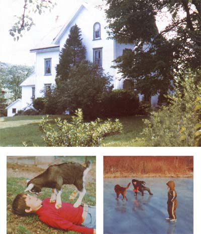

As Dorothy soon discovered in the Land of Oz: "There's no place like home!"
When I was a little girl, I spent countless hours leafing through the family photograph album, mesmerized by the prints of my grandmother's huge Victorian house. I daydreamed many a rainy afternoon away, lost in a secret vision that-one day-I'd be living and raising a family of my own in just such a serene and secure setting.
And now, more than 25 years later, my family and I are actually settled in a lovely historic stone house on several hilly acres of farmland in the middle of peaceful Bucks County, Pennsylvania. Of course, it took us a while to get there. After all, my husband Frank and I are both products of suburbia, and when we married we were a long way from living in the country. In fact, "life's little realities" made us feel very fortunate to have a small split-level in a modern development outside of Pittsburgh.
FROM TOWN MOUSE TO COUNTRY COUSIN
As the years passed, and our three boys grew out of toddler hood and started to explore "playgrounds" beyond the limits of our backyard (those game areas included our neighbor's flowerbed and the busy street in front of our house!), I began to realize that we'd outgrown the suburbs: It was time to make a radical change in our lifestyle.
So, during the afternoons, while my husband was at work and my two oldest sons (Frankie and Chris) were in school, I'd put Danny (my youngest) beside me in the car and drive off in search of my long dreamed-of big house surrounded by rolling acres. Two years of such casual exploring went by, and nothing promising turned up. Then I received a call from a realtor friend who claimed to have found the perfect place for us. It was, he said, an old Victorian house set on five acres of land, complete with a stream, a barn, and a workshop!
Unable to resist the vision conjured up by the realtor's words, I grabbed Danny and met my friend at the farm that very day . . . and was delighted to discover that the house was everything he'd said it would be, and that it was quite close to the agricultural college where my husband teaches. I felt that I'd found my ideal home at last!
Happily, my spouse's enthusiasm for buying the farm soon matched my own. Even though the house's paint was gone . . . the porch was toppling over . . . and a side of the barn had collapsed, we both fell in love with the charming old place. And so, within a week (thanks to an unusually generous helping of luck) we sold our former house and signed a contract on a dream.
SETTLING IN
Because we received a lot of help from friends, neighbors, and parents, we were able to move to the country during the long Fourth of July weekend. Everything happened so fast that we never really had time to consider that some adjustments were going to have to be made (especially by the boys, who were merely being towed along by Mom and Dad in pursuit of what was primarily parental fantasy!) if we were all to live "happily ever after" in our new environment.
Well, that point became clear to me during the first night. My husband had to work that evening, and a violent thunderstorm struck while he was gone. As you can probably imagine, convincing three frightened and disoriented youngsters that everything wa fine and that they'd soon learn to love their new home was no small feat for good of Mom. Worse still, as soon as I got them quieted down, I discovered that rain was leaking in around nearly ever window in the house. I have to admit that-as I was attempting to plug up the most alarming of the torrents-I wondered just ho many more adventures we were in for.
Luckily, most of our other surprises were pleasant ones. For instance, while I was unloading our trailer the day after the storm, the woman who lived across the street came over to introduce herself. We got to talking and found that we both loved gardening. Before I knew it, she'd rushed home and was back with a tray full of corn sprouts. With her help, I put the young plants in the ground that day. What a nice feeling it was to have a garden started, even though my family and I weren't yet unpacked!
The process of learning to coexist with nature provided us with a number of rewarding and amusing experiences. Among our most interesting "tenants" was a family of raccoons that made a home in an old maple tree outside Frank's and my bedroom window. From time to time, they'd peer in at night to say hello. Later, a windstorm blew the tree across part of our roof. When we finally managed to cut down to the base of the maple, we found-in the raccoon's abandoned "living room"-two pet-food dishes that I thought I'd misplaced weeks before, along with various other household items that I'd been unable to locate.
Another experience concerned a piece of land that lies beyond the stream on one end of our property. The people who sold us the farm had told us that the area was useless swampland. Always ready to rise to a challenge, my husband called all of us out one morning, telling us to put on our boots, grab sickles and scythes, and follow him. Well, it took us about three days of hard work, but eventually we cleared that land and dug two drainage ditches running from the spring to the creek. And now, the former bog is a lovely park like area . . . a perfect place for afternoon frog-hunting expeditions or relaxing evening strolls.
Shortly after we created our "park", my mother came to visit. One day (after she'd been walking with Danny and Chris and they'd shown her our useful ex-swamp, their favorite climbing tree, and their personal English walnut "store") she told Frank and me that, as far as she was concerned, there was only one word that could truly describe the atmosphere of our farm: serenity. We agreed wholeheartedly, and from that time on-our home in Bucks County has gone by that name.
"AMONG MY SOUVENIRS.. ."
It's been six years since we moved to Bucks County, and we've stored up a lot of wonderful memories during our time here: magical Christmas seasons spent ice-skating to yuletide music on our neighbor's pond . . . the welcome sight of daffodils announcing the coming spring . . . planting and nurturing fruit trees . . . working together to shore up the roof and clean out long-neglected gutters . . . and taking time out from our busy schedules to play a family game of touch football now and then.
Today, the house that once looked so forlorn and dilapidated is proudly taking its place among other prominent Pennsylvania historic sites. And-perhaps most important of all the changes-our boys have matured nicely under the responsibilities of country living. Gone are the hours spent passively watching television, as well as the hazards of playing in the street. In their places are days filled a with tending the animals (Danny's flock of pullet hens and the irrepressible Heidi, our goat) and exploring the woods and fields surrounding our home.
It's hard to believe that our sons were still toddling around when we arrived here, and that now they're just a step away from manhood. As I look out the study window and catch a glimpse of Danny and my husband striding off toward the barn, I realize how pre cious these times are, and how quickly they'll be gone. Yet I also know that the day isn't so far away when our grandchildren will be gathering the eggs . . . or playing football on the front lawn . . . or feeding green sprigs to Heidi's offspring. And I can't help but smile with satisfaction at the security and joy that every one of us has. found here at "Serenity".
|
 PHOTOS BY THE AUTHOR ABOVE: It took nearly two years to locate our dream house, ""Serenity"". BELOW LEFT: Our son and his goat, Heidi, see eye to eye. BELOW RIGHT: Skating on a neighbor's pond keeps our boys hardy and happy (and away from the TV set!). |
|
|